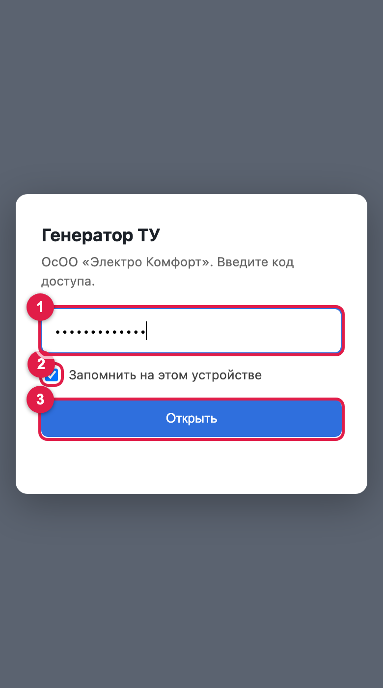

1Вход на сайт
Откройте ссылку в браузере (на компьютере лучше Google Chrome, на iPhone — Safari):
kumanurmatov.github.io/elektro-komfort-docs
На главной две плитки: Генератор ТУ (проект + протокол) и Редактор схем (ситуационные схемы). Генератор закрыт кодом.

- Введите код доступа — его присылают отдельно (в инструкции его нет).
- «Запомнить на этом устройстве» — оставьте галочку, тогда код больше спрашивать не будет.
- Нажмите Открыть. Если написано «Неверный код» — проверьте раскладку и дефисы.
2Что где на экране
Слева — данные ТУ, справа — готовые листы. Листы меняются сразу, пока вы печатаете.
- Вкладки: Новый ТУ (форма) и Журнал (все выданные протоколы, цифра — сколько их).
- Блок «Из технических условий» — сюда переписываете данные с бумажного ТУ.
- Голубые поля программа заполняет сама по правилам. Их можно поправить — поле станет белым, а кнопка «↺ авто» рядом вернёт расчёт.
- Что показывать справа: проект (12 листов), протокол (2 листа) или оба.
- PDF проекта / PDF протокола — сохранить файл.
- Печать (с конца) — сразу на принтер проект и протокол, каждый с последней страницы.
- Масштаб листов: «−» / «+», нажатие на проценты — вернуть. Также ⌘ + колесо мыши.
- Новый ТУ — очистить форму под следующий ТУ. Записать в журнал — сохранить выдачу (при печати и PDF это делается само).
3Заполнение по ТУ — шаг за шагом
Начинайте с кнопки Новый ТУ. Дальше сверху вниз:
| Поле | Что вписать | На что обратить внимание |
|---|---|---|
| № ТУ, Дата ТУ | Исходящий номер и дату с бланка ТУ | Буква «б» в номере — это буква, не цифра 6 (565/70б). Номер ТУ = номер заказа в проекте. |
| Заказчик — как в ТУ | Как написано после «На запрос:» | Ниже программа сама ставит имя в именительном падеже. |
| Заказчик в документах | сам | Правило: окончание «-ой» — женщина (Петровой → Петрова), любое другое — мужчина (Иванова → Иванов). Подсказка под полем пишет, что выбрано. Если ошиблось — поправьте вручную. |
| Объект, Адрес | Как в ТУ («Жилой дом», «Кошара»…) | Адрес полностью: «с. …, ул. … дом». |
| Район, кВт | Из ТУ | Мощность определяет автоматы (см. ниже). |
| Подключение | ВЛ или РУ | Строго как в ТУ: «от ВЛ-0,4 кВ» → ВЛ, «от РУ-0,4 кВ» → РУ. Это меняет текст в проекте. |
| Точка | Фидер, опора, ТП | Например «ф-1 опора №5 ТП-П000», или только «ТП-П000». |
| Кабель: марка, сечение | АВВГ / СИП-2, 4х16 / 4х25 / 4х35… | По умолчанию АВВГ 4х16 — меняйте, если в ТУ или по заданию другое. |
| Длина, м | сама 25–30 м | Если длина известна — впишите её. Одна и та же цифра попадёт на план (лист 5), в спецификацию (лист 11) и в протокол. |
| Автоматы | сами | До 10 кВт — 25/25/25, до 20 кВт — 40/40/25, до 40 кВт — 80/80/63. |
4Протокол: дата, номер, погода
- Дата протокола — сама: дата ТУ + 1 день. Месяц в номере пишется римскими (XI).
- Номер — сам: следующий после последнего выданного. Под полем видно «последний выданный: № … (фамилия)» — проверьте, что номер идёт по порядку.
- Погода подтягивается сама по району и дате (температура днём, ясно/пасмурно, максимум за 10 дней). Если интернета нет или дата в будущем — впишите руками.
- Изоляция — случайные значения 782–809 МОм, заземление всегда 25/26/25. Кнопка «🎲 другие» — переиграть.
5Проверка перед печатью
Пролистайте листы справа и проверьте:
- ☐ ФИО заказчика — в именительном падеже, мужчина/женщина верно.
- ☐ № ТУ и дата совпадают с бумагой.
- ☐ ВЛ или РУ — как в ТУ.
- ☐ Марка, сечение и длина кабеля — одинаковые на листе 5, листе 11 и в протоколе.
- ☐ Номер протокола не занят (нет жёлтого предупреждения).
- ☐ «Кем выданы» — ЧуПЭС или БиПЭС (см. п. 9).
6PDF и печать
Сохранить PDF
Нажмите PDF проекта или PDF протокола. Откроется окно печати браузера — выставьте так:
Имя файла подставится само: «3-х фазный жилой дом Иванов А.Б. … .pdf» и «Протокол Иванов А.Б..pdf».
Печать на принтер
Печать (с конца) — в том же окне выберите принтер Epson L3250, поля «Нет». Сначала выйдет проект с 12-го листа по 1-й, затем протокол со 2-го по 1-й — стопка ляжет по порядку.
7Если ТУ уже выдавался
- Если такой № ТУ уже есть в журнале — появится жёлтое предупреждение. Номер протокола берётся из старой выдачи, новый номер не тратится. Повторно такой протокол не выдавать; «Открыть запись из журнала» — открыть ту выдачу.
8Журнал
- Поиск — по фамилии, адресу, № ТУ или № протокола.
- Запись: номер протокола, заказчик, дата, ТУ, кабель. Нажмите — откроется с теми же номерами (можно перепечатать).
- Скачать журнал — файл-копия. Загрузить журнал — добавить записи из такого файла (например, присланного).
- Вкладка журнала, цифра — количество записей.
9Постоянные данные (БиПЭС)
- Внизу формы — «Постоянные данные»: директор, лицензия, прибор, инженер ЭТЛ. Обычно не трогаются.
- Кем выданы ТУ — по умолчанию «ОАО НЭСК ЧуПЭС». Для ТУ Аламудунского района (БиПЭС) выберите «ОАО НЭСК БиПЭС». Значение запоминается — после БиПЭС не забудьте вернуть ЧуПЭС.
10С телефона
Всё то же самое, только разделено на три вкладки внизу.
Данные (картинка слева):
- Нижняя панель: Данные — форма, Листы — посмотреть и напечатать, Журнал.
- Новый ТУ и Записать в журнал всегда внизу.
- Голубые поля — заполнились сами (как на компьютере).
Листы (в середине):
- Масштаб: «−» / «+». Удобнее — раздвинуть двумя пальцами или дважды тапнуть по листу (ещё раз — обратно).
- Внизу: какие листы показать, PDF и печать.
Журнал (справа): нажмите на запись, чтобы открыть её.
11Частые вопросы
Поле было голубым, я его исправил — оно стало белым. Это нормально?
Да. Белое — значит, вписано вручную и программа его больше не пересчитывает. «↺ авто» над полем вернёт расчёт.
Сайт выглядит по-старому после обновления
Обновите страницу: на компьютере ⌘⇧R, на телефоне закройте вкладку и откройте заново.
Погода не подтянулась
Нужен интернет. Для будущих дат данных нет — впишите температуру и «ясно/пасмурно» вручную.
Сменили телефон / почистили браузер
Код спросят снова, а журнал будет пустым — загрузите сохранённый файл журнала («Загрузить журнал»). Поэтому время от времени нажимайте «Скачать журнал».
Нужна ситуационная схема
Это отдельный инструмент — Редактор схем (лучше с компьютера).